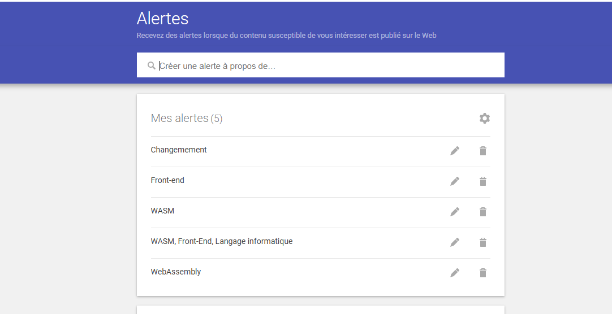

📌 Le rôle du WASM en front-end
Le développement front-end a beaucoup évolué. Lire l'article
J'ai choisi le thème : “L’évolution des langages front-end avec l’arrivée de WebAssembly (WASM)”.
Ce sujet m'intéresse car je souhaite travailler dans le domaine du front-end. Comprendre cette évolution me permet d'élargir mes compétences techniques.
Mais qu’est-ce que WebAssembly ?
WebAssembly (WASM) est un standard du web qui permet d'exécuter du code à haute performance directement dans les navigateurs.
Il complète JavaScript et vise à améliorer les performances web, grâce à un bytecode compilé depuis différents langages (C/C++, Rust, etc.).
En outre, WebAssembly, c’est un langage magique qui permet au navigateur de faire tourner des programmes très puissants, même s’ils viennent d’un autre langage.
Voici comment j’ai configuré mes alertes :
Le développement front-end a beaucoup évolué. Lire l'article
Comparaison de performance, sécurité et usage. Lire l'article
Quel bilan pour cette techno ? Lire l'article
Liste et limitations. Lire l'article
Utilisation dans l'IoT, la blockchain, etc. Lire l'article
Les outils essentiels pour travailler efficacement. Lire l'article